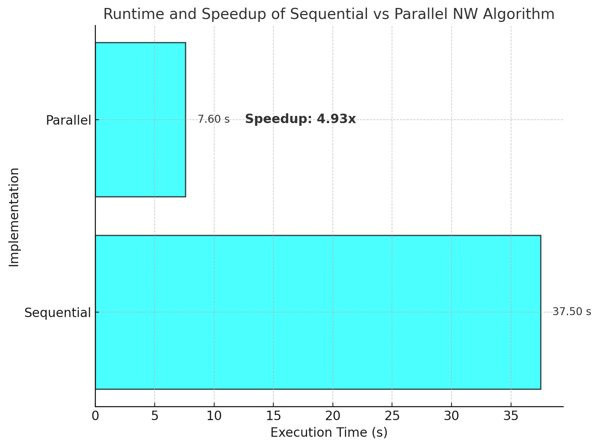

Heuristic-Based Parallel Needleman-Wunsch Algorithm
1. Introduction to the Needleman-Wunsch Algorithm
The Needleman-Wunsch algorithm is a dynamic programming technique used for global sequence alignment, particularly in bioinformatics for comparing DNA, RNA, or protein sequences. It finds the optimal alignment between two sequences by maximizing a similarity score or minimizing an edit distance.
Key Concepts:
- Global Alignment: Aligns sequences from start to end, allowing for gaps.
- Scoring Scheme: Assigns scores for matches, mismatches, and gaps.
- Dynamic Programming Matrix: Stores intermediate scores to avoid redundant calculations.
2. Recursive Formulation
The initialization steps for the Needleman-Wunsch algorithm (semi-global alignment) are as follows:
\[
C(0, 0) = 0
\]
\[
C(i, 0) = i \quad \text{for} \quad 0 \leq i \leq n
\]
\[
C(0, j) = 0 \quad \text{for} \quad 0 \leq j \leq m
\]
The core of the Needleman-Wunsch algorithm relies on the following recursive relation:
$$
C(i, j) = \max \begin{cases}
C(i-1, j-1) + \text{match-score}(i, j), \\\\
C(i-1, j) + \text{deletion-penalty}, \\\\
C(i, j-1) + \text{insertion-penalty}
\end{cases}
$$
Where:
- \( C(i, j) \) is the optimal score up to position \( i \) in sequence \( A \) and position \( j \) in sequence \( B \).
- \( \text{match-score}(i, j) \) is the score for aligning \( A_i \) with \( B_j \) (usually +1 for a match, -1 for a mismatch).
- \( \text{deletion-penalty} \) and \( \text{insertion-penalty} \) are the penalty for introducing a gap (usually negative).
3. Heuristic for Parallel Needleman-Wunsch
The standard Needleman-Wunsch algorithm is inherently sequential due to data dependencies; each cell depends on its top, left, and top-left neighbors. However, by introducing a heuristic that allows for overlapping computations and iterative updates, we can parallelize the algorithm.
Heuristic Approach:
- Chunking: Divide the matrix into overlapping chunks that can be processed in parallel.
- Iteration: Repeat the computation until no updates occur in the matrix.
- Overlap Percentage: Introduce an overlap between chunks to ensure data dependencies are met.
4. Pseudocode for the Heuristic
- Initialize the Scoring Matrix:
- Set \( C(i, 0) = i \) for all \( i \).
- Set \( C(0, j) = 0 \) for all \( j \) (semi-global alignment).
- Compute Overlapping Chunks:
- Divide the matrix columns into chunks based on the number of threads.
- Calculate overlap size based on the overlap percentage.
- Iterative Computation:
- While updates occur:
- For each row \( i \) from 1 to \( n \):
- Parallel For each chunk:
- Compute \( C(i, j) \) for \( j \) in the chunk range.
- Track if any updates occur.
5. Code Snippets
Sequential Needleman-Wunsch Implementation
// Initialize scoring matrix
for (int i = 0; i <= n; ++i) C[i][0] = i;
for (int j = 0; j <= m; ++j) C[0][j] = 0;
// Needleman-Wunsch Algorithm
for (int i = 1; i <= n; ++i) {
for (int j = 1; j <= m; ++j) {
int match = C[i-1][j-1] + (ref[j-1] == query[i-1] ? 1 : -1);
int delete_cost = C[i-1][j] - 1;
int insert_cost = C[i][j-1] - 1;
C[i][j] = std::max({match, delete_cost, insert_cost});
}
}
Parallel Needleman-Wunsch with Heuristic
// Initialize scoring matrix
#pragma omp parallel for num_threads(num_threads)
for (int i = 0; i <= n; ++i) C[i][0] = i;
#pragma omp parallel for num_threads(num_threads)
for (int j = 0; j <= m; ++j) C[0][j] = 0;
// Compute overlapping chunks
compute_chunks(m, overlap, num_threads, chunks);
// Iterative computation
bool updated = true;
while (updated) {
updated = false;
#pragma omp parallel num_threads(num_threads)
{
bool local_updated = false;
#pragma omp for
for (size_t chunk_idx = 0; chunk_idx < chunks.size(); ++chunk_idx) {
int start = chunks[chunk_idx].first;
int end = chunks[chunk_idx].second;
for (int i = 1; i <= n; ++i) {
for (int j = start; j <= end; ++j) {
int old_value = C[i][j];
int match = C[i-1][j-1] + (ref[j-1] == query[i-1] ? 1 : -1);
int delete_cost = C[i-1][j] - 1;
int insert_cost = C[i][j-1] - 1;
C[i][j] = std::max({match, delete_cost, insert_cost});
if (C[i][j] != old_value) local_updated = true;
}
}
}
if (local_updated) {
#pragma omp atomic write
updated = true;
}
}
}
6. Why the Heuristic Works
- Data Dependencies: By introducing overlaps, we ensure that computations in adjacent chunks have the necessary data to proceed, satisfying dependencies.
- Convergence: The iterative process allows for corrections in overlapping regions by propagating the score through the overlaps, ensuring the final result converges to the correct solution.
- Parallel Efficiency: Dividing the work among multiple threads reduces execution time, especially for large matrices.
7. Iteration Count and Overlap Percentage
- Overlap Percentage: Set at 2% of the sequence length to balance between sufficient data overlap and minimizing redundant computations.
- Iteration Count: The algorithm converged in 2 iterations, indicating rapid convergence due to the heuristic.
8. Experimental Setup
- Sequences:
- Reference sequence length: \( 10^5 \) nucleotides.
- Query sequence with 1% mutations introduced.
- Hardware:
- Processor: 24-core Intel Xeon 6248R CPU.
- Configuration: Single socket.
- Results:
- Parallel Execution:
- Total Iterations: 2
- Execution Time: 7,649.71 ms
- Sequential Execution:
- Execution Time: 37,516.4 ms
- Speedup: Approximately 4.9x
9. Performance Plot

Note: The plot illustrates the execution time for sequential and parallel implementations.
Conclusion
The heuristic-based parallel Needleman-Wunsch algorithm demonstrates significant performance improvements by efficiently utilizing multiple cores. The overlap heuristic ensures correctness while allowing for parallel computation, resulting in a near 5x speedup over the sequential version.